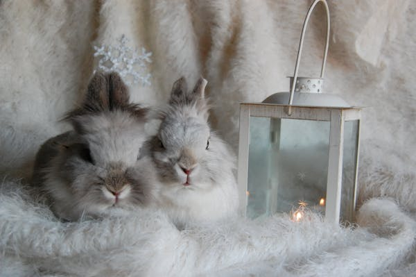

El conejo holandés, también conocido como brabander , es un animal doméstico de apariencia adorable y pequeño tamaño, siendo además su versión miniatura (conejo holandés enano) una de las populares. Este pequeño mamífero resulta una excelente compañía para quienes desean tener una mascota dócil y cariñosa, así como fácil de cuidar.